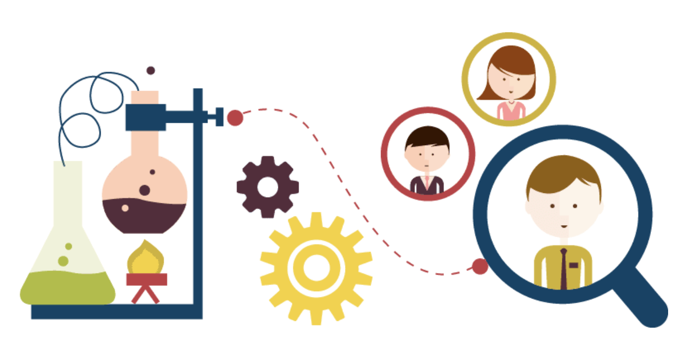

User Research | Interactive Prototyping | Adobe XD
Course Media Lab
How to encourage people to engage in positive consumption behavior?
Along with a larger consumption trend, the amount of garbage is affecting our environment dramatically. Consumption is one large problem linked to sustainability and improvement needs to be made in order to make a change. With the purpose to increase the awareness around consumption this study presents five problems linked to the recycling topic and suggests solutions for some of them.

This study focus on the target group of people that already have an interest or motivation for recycling.
Investigating what has been done within the area, what problems that existed within the area of sustainability and especially linked to consumption and recycling.
The first low-fi prototype is based on literature studies and previous knowledge about recycling. A simple low-tech concept which consisted of only pen and paper. Narrowing down the ideas into testable artifacts in order to be able to analyze them and take the next step.
A large data collection was made using a Google form which asked people about their current approach to recycling. The idea of this data collection was, among other things, to see if people actually recycle. 55 responses were provided from the collection, which contributed to credible compilation of data and results.
An affinity diagram was made to evaluate the data. The method is simply a way of categorizing the more broad answers. Findings is presented above under Problem and Findings.
After evaluation of the collected results, we modified the prototype due to the answers. An interactive and highly functional prototype was made with Adobe XD.
This prototype is only one suggestion of how to solve the questions that has come up during our study. The final prototype consist of 5 main functionalities